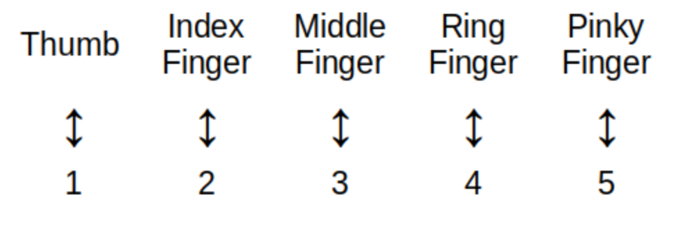
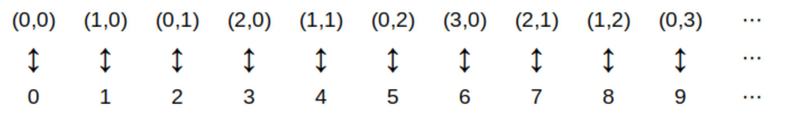
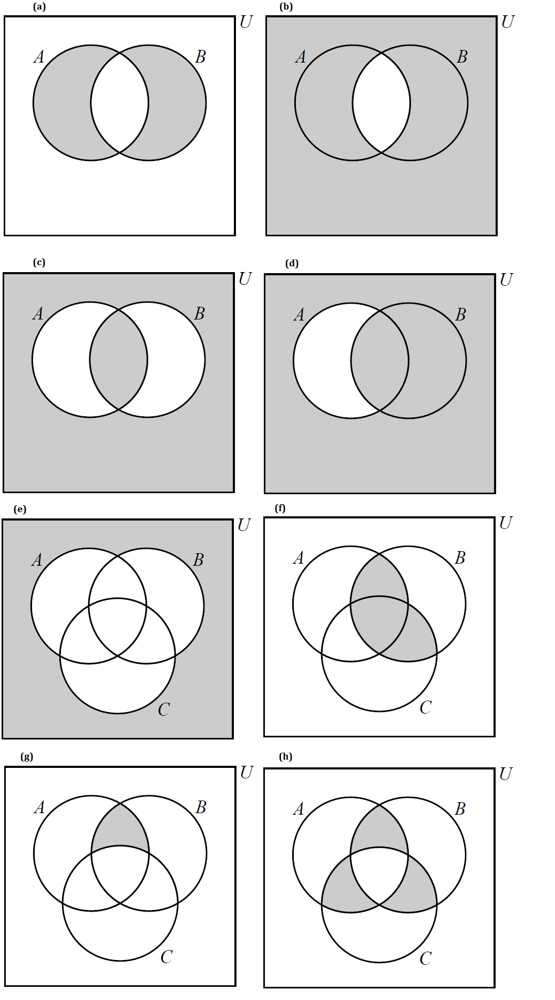

4. Set Theory
NOTICE: If you are NOT enrolled in the CSC 230 course that I teach at SFSU, you probably are looking for the “public version” of the book, which I only update between semesters. The version you are looking at now is the “CSC230 version” of the book, which I will be updating throughout the semester.
This chapter was last updated on September 15, 2025.
Fixed some typos.
Set theory, along with logic, is
the
foundation of mathematics in our time. In earlier eras, people tried to use arithmetic (e.g., counting and whole numbers) and geometry (e.g., measurement of lengths, areas, and volumes along with geometric constructions) as the foundations of all mathematics. However, over the last two centuries, mathematicians gained new understandings of issues with these traditional foundations which led them to seek a new, firmer foundation. For now, that firmer foundation uses set theory: The study of collections of objects and how those collections can be combined, associated, and themselves added to other collections.
NOTE: If you want to dig much more deeply into what the issues with using arithmetic or geometry as the foundation of mathematics are, you can start with this
Wikipedia page
which includes a a brief description of the "foundational crisis of mathematics."
Key terms and concepts covered in this chapter:
-
Sets
-
Subsets of a set
-
The empty set
-
The power set of a set
-
Cartesian products
-
-
Venn diagrams
-
Cardinality and countability of finite and infinite sets
-
Set cardinality and counting
-
-
Operations with sets: Union, intersection, complement, and others
-
DeMorgan’s laws
-
Inclusion-exclusion principle
-
4.1. Sets
A set is an unordered collection of objects, called elements or members . A set is said to contain its elements.
If \(x\) is an element of the set \(S,\) then we write \(x \in S\). If \(x\) is not an element of the set \(S\), then we write \(x \not\in S\). For example, if \(S\) is the set of names of states in the United States of America, then “New York” is an element of \(S\) and “Ontario” is not an element of \(S,\) that is \[ \text{“New York”} \in S \text{ and } \text{“Ontario”} \not\in S. \] As another example, if \(E\) is the set of even integers, then \(2 \in E\) and \(3 \not\in E.\)
4.1.1. Describing A Set: The Roster Method
One way of describing a set is the roster method: List all the elements of the set between curly braces. For example, \[A = \{1,-2,0,1,-3\} \] is the set whose elements are \(-3,\) \(-2,\) \(0,\) and \(1.\)
-
Notice that the set \(A\) contains exactly \(4\) elements, even though the element \(1\) appears twice in the roster - duplicate entries do not matter.
-
Also, the order of the elements in the list does not matter. That is, \(\{-3,-2,0,1 \}\) and \(\{0, 1,-2,-3\}\) are two more ways of describing the same set \(A.\)
|
A WARNING ABOUT THE PYTHON EXAMPLES INVOLVING SETS : The mathematical set \(A = \{1,-2,0,1,-3\}\) is a constant - you cannot change the set by removing elements or inserting new elements. However, Python objects of type set are mutable so it is possible to remove elements or insert new elements, as shown in the following code example. The mathematically correct implementation of sets in Python uses objects of type frozenset because objects of type frozenset are immutable, just like mathematical sets. But there are advantages to using type set instead of frozenset : The roster method notation can be used to initialize or print a Python set , but cannot be used with a Python frozenset : You must call the frozenset constructor to create and initialize a frozenset . The authors of the original “Discrete Math” chose to use Python sets instead of frozensets in the code examples; the author of this remix made the same choice. |
4.1.2. Describing A Set: Set Builder Notation
Another way of describing a set is the use of set builder notation. We write a set as \[\{x \in D : P(x)\}.\] This is the set of all elements \(x\) from a domain \(D\) that satisfy the predicate \(P(x).\) We can use either the colon \(:\) or the vertical bar \(|\) as the separator in this notation. For example, \(\{ x \in \mathbb{N} \, | \, x^{2} \leq 50 \}\) is the set of natural numbers that are less than \(\sqrt{50}.\)
Yet another way of describing a set is to use a function or an algebraic expression, as in \[\{ f(x) : x \in D \}.\]This is the set of all values \(f(x)\) for \(x\) in the domain \(D\). For example, \(\{ 2n : n \in \mathbb{N} \}\) is the set of the even natural numbers. Again, we can use either the colon \(:\) or the vertical bar \(|\) as the separator.
4.1.3. Describing A Set: Special Sets Of Numbers
You may already be familiar with the following sets of numbers, which are listed here for reference.
Other special sets will be defined as needed.
4.1.4. Describing A Set: Switching Between Representations
A set can usually be described in more than one way, as shown in the following example.
|
When there are too many elements in a set for us to be able to list each one, we often use ellipses (\(\dots\)) when the pattern is obvious. For example, we have \[\mathbb{Z} = \{\dots,-3,-2,-1,0,1,2,3,\dots\}.\] |
4.2. Equality Of Sets
We say that two sets are equal if and only if they contain the same elements. When \(A\) and \(B\) are equal sets, we write \(A = B\). When \(A\) and \(B\) are not equal sets, we write \(A \neq B\).
The three sets \(\{2,3,5,7\},\) \(\{5,2,7,3\},\) and \(\{x \in \mathbb{N} : x \text{ is prime and } x < 10 \}\) are equal sets because they contain the same elements. In fact, \(\{2,3,5,7\},\) \(\{5,2,7,3\},\) and \(\{x \in \mathbb{N} : x \text{ is prime and } x < 10 \}\) are really just
three different descriptions of the same set,
in the same way that
\(1 + 3,\) \(5 - 1,\) and \(2^{2}\) are three different descriptions of the same number, 4.
The extended equality \[\{2,3,5,7\} = \{5,2,7,3\} = \{x \in \mathbb{N} : x \text{ is prime and } x < 10 \}\] is a true statement for the same reason the extended equality \(1 + 3 = 5 - 1 = 2^{2}\) is a true statement.
Note: You may be used to using the equal sign "=" as if it means "simplifies to" in your previous math experience, but "=" actually means "represents the same thing as."
4.3. The Empty Set
Consider the set of all natural numbers whose square is equal to 2, described using set builder notation: \(\{x \in \mathbb{N} : x^2 = 2\}.\) If you use the roster method to list all the elements you will get the set \(\{ \}\) because there are no natural numbers whose square is equal to 2!
The set \(\{ \}\) is called the empty set, or the null set. The symbol \(\emptyset\) is used to represent the empty set, too, that is, \[ \emptyset = \{ \}. \]
|
It is important to note that \(\{\}\) and \(\emptyset\) are both ways to write the empty set. However, the mathematical set \(\{ \emptyset \}\) is not the empty set because it contains one element, namely the empty set. In general, the set \(A\) is not the same as the set \(\{ A \}.\) |
|
Python Tip: The mathematical set \(\{ \emptyset \}\) must be implemented as \(\{ \text{frozenset()} \}\), which is the Python set that contains the empty frozenset . In general, anytime we want to implement a mathematical set \(B\) as an element of another mathematical set \(A\) in Python, we need to implement \(B\) as a frozenset in order to be used as an element of the Python set \(A\). This is due to the fact that elements of Python sets must be hashable ; further explanation is beyond the scope of this textbook. |
4.4. Subsets of a Set
Suppose \(A\) and \(B\) are two sets, and that every element \(x\) of the set \(A\) is also an element of set \(B.\) We say that \(A\) is a subset of a set \(B,\) and write \(A \subseteq B\). If a set \(C\) is not a subset of \(B,\) we write \(C \not\subseteq B\).
If \(A \subseteq B\) but \(B\) contains at least one element that is not in A, then \(A\) is called a proper subset of \(B\), denoted \(A \subset B\). That is, \(A\) is a proper subset of \(B\) if it is a subset of \(B\) but is not equal to \(B.\)
4.5. The Power Set of a Set
Given a set \(A,\) we can define a new set by collecting together all subsets of \(A\). This new set is called the power set of \(A.\) The power set of \(A\) is denoted by \(\mathcal{P}(A).\) That is, \[ \mathcal{P}(A) = \{ B \, | \, B \subseteq A \}. \] Notice that \(\mathcal{P}(A)\) is a set whose elements are themselves sets.
The empty set has only one subset, namely itself. Thus, we see that \[\mathcal{P}(\emptyset) = \{\emptyset\}.\]
We can also find the power set of a power set. For example, we have the following:
| \[\begin{split} \mathcal{P}(\{ 3 \}) &= \{\emptyset, \{ 3 \}\},\\ \\ \mathcal{P}(\mathcal{P}(\{ 3 \}) &= \mathcal{P}(\{\emptyset, \{ 3 \})\\ &= \{\emptyset, \{\emptyset\}, \{ \{ 3 \} \}, \{\emptyset, \{ 3 \}\}\}. \end{split}\] |
4.6. Cartesian Products
The Cartesian product of two sets \(A\) and \(B\) is the set of ordered pairs defined by,
\( A\times B=\{(a,b) \, | \, a\in A \text{ and } b\in B)\}\),
|
Cartesian products are created using ordered pairs, so if \(A\) and \(B\) are different sets, then \(A \times B\) is different from \(B \times A\). |
|
The Cartesian coordinate systems are Cartesian products. The two-dimensional \(xy\)-plane is represented by \(\mathbb{R}^2=\mathbb{R}\times \mathbb{R}=\{(x,y)|x,y\in \mathbb{R}\}\), and, the three-dimensional \(xyz\)-space are represented by \(\mathbb{R}^3=\mathbb{R}\times \mathbb{R}\times \mathbb{R}=\{(x,y,z)|x,y,z\in \mathbb{R}\}\) |
4.7. Cardinality Of Sets: Finite Sets
Cardinality is the formalization of the idea of the count of the number of elements in a set.
In this section, we will prefer counting from 1 instead of 0. You will see below why this makes no difference.
Set \(A\) is called a finite set if either
-
\(A\) is the empty set or
-
there is a one-to-one correspondence between \(A\) and the set \(\{ i \in \mathbb{N} \, | \, 0 < i \leq n \} = \{1, 2, \ldots , n \}\) for some positive integer \(n.\)
|

This definition of "finite set" may seem abstract, but it’s just a formal description of what is likely the way you learned to count when you were young: You matched objects with number names (that is, numerals) as shown in the image. |
The cardinality of a finite set \(A,\) denoted by \(|A|,\) is
-
0 if \(A = \emptyset\) or
-
the value of \(n\) for which there is a one-to-one correspondence between \(A\) and \(\{1, 2, \ldots , n \}.\)
For a finite set \(A\) the cardinality \(|A|\) is just the number of elements in the set. The image shows that \(|\{0,1,2,3,4\}| = 5.\)
4.8. Venn Diagrams
A Venn diagram, named after the English mathematician John Venn, consists of one or more circles, with each circular region representing a set. An example can be seen here.
{kind=link}
We write the elements of a set within the circular region that represents the set; anything written outside the circular region is not an element of the set. If an element is written in the overlap of two or more regions, then it is an element of each of the sets.
The circles are often drawn inside a larger rectangle which represents a universal set \(U\) that we are focusing on. In the example linked above, the rectangle was omitted because every glyph was an element of at least one of the sets represented by a circular region, but if we introduced addition glyphs like ہ we would need to draw the rectangle because that glyph would need to be written outside all three circular regions.
In this textbook,
a Venn diagram must show
all the possible overlaps
of the sets. This is consistent with
Venn’s paper from 1880.
That is, you should NOT be able to answer the question "Is
x
an element of set
A?
" when
x
is written in the circular region for a different set,
B.
In the image, the upper right example shows a Venn diagram because you could write
x
in the overlap of the two regions or you could write
x
in the the part of the region for
B
that is outside the circular region for
A.
The lower two diagrams are not Venn diagrams: In either one of those, if
x
is written in the region for set
B,
it must be true that
x
is not an element of
A
(on the lower left) or that
x
is an element of
A
(the example on the lower right). Diagrams like the lower two examples will be called
Euler diagrams
in this textbook.
Some sources use the term
Venn diagram
for all four of the examples shown in the image, but you should always assume when reading this textbook that the lower two are NOT Venn diagrams. Click
here
to see the light!
{kind=link}
4.9. Set Operations
We can obtain new sets by performing operations on other sets. When performing set operations, it is often helpful to consider all of our sets as subsets of a universal set \(U.\) We can think of the universal set as the set of all of the objects under consideration.
We can represent set operations visually using Venn diagrams.
4.9.1. Union
The union of the sets \(A\) and \(B\) is the set containing those elements that are in \(A\) or \(B\) or both, and is denoted by \(A \cup B\). More formally, \[A \cup B = \{x \in U : x \in A \text{ or } x \in B\}.\]
Note that "or" is read here as the "inclusive or". We have the following Venn Diagram for \(A \cup B\):
Note that, for any sets \(A\) and \(B,\) \[A \cup B = B \cup A.\]
4.9.2. Intersection
The intersection of the sets \(A\) and \(B\) is the set containing those elements that are in \(A\) and \(B\) and is denoted by \(A \cap B\). More formally, \[A \cap B = \{x \in U : x \in A \text{ and } x \in B\}.\]
We have the following Venn Diagram for \(A \cap B\):
Note that, for any sets \(A\) and \(B,\) \[A \cap B = B \cap A.\] If it is the case that \(A \cap B = \emptyset,\) then we say that \(A\) and \(B\) are disjoint . In other words, two sets are disjoint if and only if they contain no elements in common.
4.9.3. Complement
The complement of a set \(A\) is the set of all elements in the universal set \(U\) which are not elements of \(A\) and is denoted by \(\overline{A}.\) More formally, \[\overline{A} = \{x \in U: x \not\in A\}.\] Note that other textbooks and internet sources may use different notation for the complement of \(A\), such as \(A'\) and \(A^{c}\), but these all stand for the same set, so that \(\overline{A} = A' = A^{c}\).
We have the following Venn Diagram for \(\overline{A}\):
For any set \(A,\) \[ \overline{\overline{A}} = A \] \[ \overline{A} \cup A = U \] \[ \overline{A} \cap A = \emptyset. \]
4.9.4. Other Operations
The three operators complement, intersection, and union are the most commonly used to define subsets of a universal set. You will see why this is so later in the chapter.
However, there are some other operators you should be familiar with.
Difference
The difference of the sets \(A\) and \(B\) is the set containing those elements that are in \(A\) but not in \(B\) and is denoted by \(A \setminus B\). Set difference is also denoted by \(A - B\). More formally, \[A \setminus B = \{x \in U: x \in A \text{ and } x \not\in B\}.\]
We have the following Venn Diagram for \(A \setminus B\):

Note that, for any sets \(A\) and \(B\), if \(A \neq B,\) then \[A \setminus B \neq B \setminus A.\] However, if \(A = B,\) then \(A\setminus B = B \setminus A = \emptyset\).
Symmetric Difference
The symmetric difference of the sets \(A\) and \(B\) is the set containing those elements that are in \(A\) or \(B\) but not both \(A\) and \(B\). It is denoted by \(A \oplus B\) in this textbook, but other books and sources may use different notation such as \(A \Delta B\). More formally, \[A \oplus B = \{x \in U: (x \in A \text{ and } x \not\in B) \text{ or } (x \in B \text{ and } x \not\in A)\}.\]
We have the following Venn Diagram for \(A \oplus B\):

Note that, for any sets \(A\) and \(B,\) \[A \oplus B = B \oplus A.\]
4.9.5. Multiple Set Operations
We can also perform more than one set operation on a collection of sets. For example, let \(A,\) \(B,\) and \(C\) be sets and consider the following set: \[(A \setminus B) \cup (C \setminus B).\]This is the set that is obtained by taking the union of the sets \(A \setminus B\) and \(C \setminus B.\) We have \[(A \setminus B) \cup (C \setminus B) = \{x \in U: (x \in A \text{ and } x \not\in B) \text{ or } (x \in C \text{ and } x \not\in B)\}.\]
We have the following Venn Diagram for \((A \setminus B) \cup (C \setminus B)\):
Note that the Venn Diagram also represents \((A \cup C ) \setminus B\). In general, there are multiple ways to describe the result of multiple set operations.
Video Examples
The following two video examples feature Dr. Katherine Pinzon, Professor of Mathematics at Georgia Gwinnett College.
Video Example 1
Video Example 2
4.10. Set Identities
Here is a collection of additional properties of the operations on sets. Each of these can be verified by drawing two Venn diagrams, one that represents the left-hand side of the equation and another that represents the right-hand side of the equation and showing that the resulting shadings of the Venn diagrams are the same.
Note that it is traditional to focus on complement, union, and intersection as the three primary set operations because the other operations such as difference and symmetric difference can be written in terms of those three primary operations, for example, \(A \setminus B = A \cap \overline{B}\) and \(A \oplus B = (A \cap \overline{B}) \cup (\overline{A} \cap B)\).
Associative laws: \[ A ∪ (B ∪ C) = (A ∪ B) ∪ C \] \[ A ∩ (B ∩ C) = (A ∩ B) ∩ C \]
Distributive laws: \[ A ∪ (B ∩ C) = (A ∪ B) ∩(A ∪ C) \] \[ A ∩ (B ∪ C) = (A ∩ B) ∪ (A ∩ C) \]
De Morgan’s laws: \[ \overline{A \cup B} = \overline{A} \cap \overline{B} \] \[ \overline{A \cap B} = \overline{A} \cup \overline{B} \]
4.10.1. Operator Precedence (Order Of Operations)
To ensure that we can properly interpret an expression involving multiple set operations, we can either use parentheses or rely on operator precedence .
When an expression for sets involves parentheses, complementation, intersection, and union, we start by evaluating all expressions enclosed in parentheses from left to right, then all complementations from left to right, then all intersections from left to right, and finally all unions from left to right. (Set difference and symmetric difference were left out of this discussion because there does not seem to be a standard definition for where they fit in! But, as shown earlier, those two operations can be rewritten in terms of complementation, union, and intersection.)
For example, the expression \(\overline{A} \cup B \cap C\) represents the same set as \((\overline{A}) \cup (B \cap C)\). Parentheses must be used if you want to represent a different set such as \((\overline{A} \cup B) \cap C\).
This is the same way arithmetic expressions like \(-3 + 5 \cdot 2\) are evaluated: The value of \(-3 + 5 \cdot 2\) is \((-3) + (5 \cdot 2) = 7\), not \((-3 + 5) \cdot 2 = 4\).
4.11. Venn Diagrams, Partitions, and Bitstrings
A partition of a set \(U\) is a set of subsets of \(U\) such that each element \(x \in U\) is a member of exactly one of the subsets in the partition.
As an example you already know, one partition of the set of integers \(\mathbb{Z}\) is the set of subsets \[\{ \text{the set of even integers}, \text{the set of odd integers} \}\] Notice that every integer \(n\) belongs to exactly one of the two elements of this set.
As another example, for any subset \(A \subseteq U\) you have a partition of \(U\) into the 2 sets that are elements of \[\{ A,\,\overline{A} \}\] Note that each element of \(U\) must be in exactly one of the subsets \(A\) and \(\overline{A}\).
For two subsets \(A\) and \(B\) of a universal set \(U\), consider the Venn diagram of \(A\) and \(B\). Notice that, by considering all possible intersections of these two sets and their complements, \(U\) is partitioned into 4 subsets, namely, the 4 elements of \[\{ \overline{A} \cap \overline{B},\, \overline{A} \cap B,\,A \cap \overline{B},\,A \cap B \}\] We can refer to each of these 4 subsets by using bitstrings of length 2 as follows:
-
The leftmost bit is 1 if an element of the subset is an element of \(A\), and is 0 if an element of the subset is not an element of \(A\).
-
The rightmost bit is 1 if an element of the subset is an element of \(B\), and is 0 if an element of the subset is not an element of \(B\).
For example, in the following Venn diagram, the subset \(A \cap \overline{B}\) is labeled with the bitstring \(10\) because an element of \(A \cap \overline{B}\) is an element of \(A\) and not an element of \(B\).
If you had instead three subsets \(A\), \(B\), and \(C\) of the universal set \(U,\) you could partition the universe \(U\) into 8 subsets. In detail, if you have an element \(x \in U\), either \(x \in A\) or \(x \not\in A\), and for each of those possibilities, either \(x \in B\) or \(x \not\in B\), and for each of those possibilities, either \(x \in C\) or \(x \not\in C\). We can apply (twice) the multiplication principle that was first mentioned in chapter 2 to show that there are \(2 \cdot 2 \cdot 2\) possible subsets determined by the Venn diagrams of the 3 sets \(A\), \(B\), and \(C\). Using bitstrings of length 3, we can label these 8 subsets as shown.
For an integer \(n > 3\), the Venn diagram is less useful for representing the partitioning of the universe created by \(n\) subsets, but we can still reason that there ought to be \(2^{n}\) subsets in the partition, where each of the subsets can be described by a unique bitstring of length \(n\) (We will be able give a formal mathematical proof of this for every positive integer \(n\) later in the textbook after we’ve discussed mathematical induction.)
4.11.1. Disjunctive Normal Form (Set Version)
Suppose you have three sets \(A\), \(B\), and \(C\), and have partitioned the universe \(U\) into the 8 subsets as discussed above. A subset of \(U\) that corresponds to any shading of the Venn diagram can be written as a union of intersections of three sets, with one set chosen from each of the pairs \(\{ A,\,\overline{A} \}\), \(\{ B,\,\overline{B} \}\), and \(\{ C,\,\overline{C} \}\).
As an example, consider the set shown in the image, which has 4 of the 8 regions of the Venn diagram shaded:
-
\(\overline{A} \cap \overline{B} \cap \overline{C}\) which is the region outside of all three sets,
-
\(A \cap \overline{B} \cap \overline{C},\) the region in set \(A\) but in neither \(B\) nor \(C,\)
-
\(\overline{A} \cap B \cap \overline{C},\) the region in set \(B\) but in neither \(A\) nor \(C,\)
-
\(\overline{A} \cap B \cap C,\) the region in both \(B\) and \(C\) but not in \(A.\)
Write the union of these 4 subsets to create an expression that describes the entire shaded region. \[(\overline{A} \cap \overline{B} \cap \overline{C}) \cup (A \cap \overline{B} \cap \overline{C}) \cup (\overline{A} \cap B \cap \overline{C}) \cup (\overline{A} \cap B \cap C)\]
This type of expression is called a disjunctive normal form (or DNF) for the set that it represents. We will see an analog of these in a different context in the chapter on Logic.
The advantage of using the DNF is that you can write out an expression for the shaded subset using a simple algorithm. The DNF may be neither the shortest possible expression nor the most easily understood expression for the shaded part of the Venn diagram, but the DNF is a correct expression for the shaded subset.
4.12. The Principle Of Inclusion-Exclusion (PIE)
In certain application problems, we want to compute the cardinality \(|A \cup B|\) of the union of two given finite sets \(A\) and \(B\). It is tempting to simply add \(|A|\) and \(|B|\), but as the Venn diagram below shows, each element of the intersection \(|A \cap B|\) will be counted twice , once for each bit that is \(1\), if we do so.
The correct relationship between \(|A \cup B|\), \(|A|\), and \(|B|\) is given by \[ |A \cup B| = |A| + |B| - |A \cap B|. \]
Another way to see that this is the correct relationship is to use the partition \(\{ \overline{A} \cap \overline{B},\, \overline{A} \cap B,\,A \cap \overline{B},\,A \cap B \}\) to write
\(| A | = | A \cap \overline{B} | + | A \cap B |\),
\(| B | = | \overline{A} \cap B | + | A \cap B |\), and
\(| A \cup B | = | A \cap \overline{B} | + | A \cap B | + | \overline{A} \cap B |\), so
\(| A | + | B | = | A \cap \overline{B} | + | A \cap B | + | \overline{A} \cap B | + | A \cap B | = | A \cup B | + | A \cap B |\).
If we want to compute the cardinality \(|A \cup B \cup C|\) of the union of three given finite sets \(A\), \(B\), and \(C\), we can again look at the Venn diagram of the partition of \(U\) into 8 sets to see that some of the intersections will be counted one , two , or three times, once for each bit that is \(1\).
We can derive the following formula in much that same way that we did above; in fact, we can just apply the formula we found for two sets to \(| (A \cup B) \cup C |\) and use some of the set identities to help simplify the formula. \[ |A \cup B \cup C| = |A| + |B| + |C| - |A \cap B| - |A \cap C| - |B \cap C| + |A \cap B \cap C|. \]
4.13. Cardinality Of Sets: Infinite Sets
Set \(A\) is called an infinite set if it not a finite set. That is, \(A\) is not the empty set, and for every positive integer \(n\) there is no one-to-one correspondence between \(A\) and \(\{1, 2, \ldots , n \}.\)
Intuitively an infinite set \(A\) is at least as big as the set of positive integers. You may think that \(A\) must have the same size as the set of positive integers, but cardinality is a much more … "interesting" concept for infinite sets, as you will see.
First, we will say that two infinite sets \(A\) and \(B\) have the same cardinality if and only if there is a one-to-one correspondence between the two sets. As an example, the set of positive integers and the set of negative integers have the same cardinality since each nonzero integer \(n\) can be paired with its additive inverse, \(-n.\)
For finite sets, if \(A\) is a proper subset of \(B\) then it must be true that the cardinality of \(A\) is not the same as the cardinality of \(B.\) This fails spectacularly for infinite sets as the next few examples show.

This first image, which shows red points plotted in the \(xy\)-plane that have been labeled with natural numbers, suggests a way to define a one-to-one correspondence between the set of ordered pairs of natural numbers, \(\mathbb{N} × \mathbb{N},\) and the set of natural numbers \(\mathbb{N}.\)
Image credit:
"Cantor’s Pairing Function"
by crh23. The image is dedicated to the public domain under
CC0
.
{kind=link}
 This second image displays the same one-to-one correspondence in tabular form.
In the first image, notice that for each fixed value of the second coordinate \(y \in \mathbb{N},\) the horizontal row of red points of the form \(\{ (x, y) : x \in \mathbb{N} \} = \{ (0, y), (1, y), (2, y), (3, y), \ldots \}\) has the same cardinality as \(\mathbb{N}\) and
that there is one such row for every natural number \(y \in \mathbb{N}.\) That is, the set of rows has the same cardinality as the set \(\mathbb{N},\) and each of the rows has the same cardinality as \(\mathbb{N}.\)
There are, in essence, as many copies of \(\mathbb{N}\) (the rows of red points) as there are elements in \(\mathbb{N},\) and these copies are joined together to form the Cartesian product \(\mathbb{N} × \mathbb{N}\)… but this set still has the same cardinality as \(\mathbb{N}.\)
Notice something else about this example: It shows that each pair of natural numbers can be encoded as a single natural number. In fact, this example can be generalized to show that any element in the set of all finite-length sequences of natural numbers can be encoded uniquely to a natural number (so, for example, the set of all possible finite-length strings of Unicode characters/code points can be encoded to the set of natural numbers, which may or may not be surprising to you.)
You may want to read about triangular numbers to get an idea of how the mapping of ordered pairs to numbers is being done. In the first image, the red points form a "triangle of infinite height" with a vertex at \((0,0)\) and sides lying along the \(x-\) and \(y-\)axes. "Row 0" of the triangle is the single point \((0,0),\) and "row \(n\)" of the triangle is made up of the red points with natural number coordinates \((x,y)\) that add up to \(n\) (that is, \(x+y = n\).)
A proof that this mapping of ordered pairs of natural numbers to individual natural numbers is in fact a one-to-one correspondence will be presented later in the textbook.
So far, every infinite set presented has the same cardinality as \(\mathbb{N}.\)
Maybe
all
infinite sets have the same cardinality as \(\mathbb{N}?\) Nope!
The next theorem shows that \(\mathcal{P}(\mathbb{N})\) cannot have the same cardinality as \(\mathbb{N}\) so there must be at least two "infinities."
4.13.1. Countable and Uncountable Sets
Set \(A\) is called countable if
-
\(A\) is a finite set or
-
there is a one-to-one correspondence between \(A\) and \(\mathbb{N}.\) In this case, \(A\) is also called countably infinite.
Set \(A\) is called uncountable if it is not a countable set. That is, \(A\) is infinite and there is no one-to-one correspondence between \(A\) and \(\mathbb{N}.\)
Several examples of countably infinite sets were given in the examples in the preceding subsection:
-
The set of positive integers \(\{ i \in \mathbb{N} \, | \, i > 0 \},\)
-
the set of integers \(\mathbb{Z},\) and
-
the set of ordered pairs of natural numbers, \(\mathbb{N} × \mathbb{N}.\)
On the other hand, the theorem in the preceding subsection shows that \(\mathcal{P}(\mathbb{N})\) is an uncountable set.
Infinite Cardinal Numbers
In advanced mathematics, the concept of "infinite cardinal number" is developed and used to represent the sizes of infinite sets. Mathematicians use these infinite cardinal numbers to make sense of cardinalities like \(|\mathbb{N}|\) and \(|\mathcal{P}(\mathbb{N})|.\) It can be proven that \[|\mathbb{Q}| = |\mathbb{N}|\] \[|\mathbb{N}| < |\mathcal{P}(\mathbb{N})|\] \[|\mathcal{P}(\mathbb{N})| = |\mathbb{R}|\] and that \[\text{for any infinite set } A, |A| < |\mathcal{P}(A)|\] which shows that there must be infinitely-many infinite cardinal numbers.
4.14. Exercises
Remixer’s Note: This section is taken from the original “Discrete Math” book with only minor changes.
-
Consider as universal set, the set of all \(26\), lowercase letters of the English alphabet, \(U=\{a,b,c,…,v,w,x,y,z\}\), and the sets \(A=\{a,b,c,d,e,f,g,h\}\), \(B=\{f,g,h,i,j,k\}\), and \(C=\{x,y,z\}\). For the sets given below:
-
List the sets below using roster form, and
-
Draw Venn Diagrams for each of the sets
-
\(A\cup B\)
-
\(A\cap B\)
-
\(A\cup C\)
-
\(A\cap C\)
-
\(A \setminus B\)
-
\(B \setminus A\)
-
\(A \setminus C\)
-
\(C \setminus A\)
-
\(A\cup C\)
-
\(A\cap C\)
-
\(\overline{A}\)
-
\(\overline{B}\)
-
\(\overline{C}\)
-
\(\overline{B} \cap \overline{C}\)
-
\( (\overline{A} \cap \overline{B}) \cup (\overline{B} \cap \overline{C})\)
-
-
-
Using Venn Diagrams, determine which of the following are equivalent
-
\(A \setminus (A \setminus B)),\)
\(A\cup B,\) and
\(A\cap B\)
-
\(A\cup \overline{A},\)
\(A\cap \overline{A},\)
\(U,\) and
\(\emptyset\)
-
\(\overline{A}\cap \overline{B}, \)
\(\overline{A\cap B},\)
\(\overline{A}\cup \overline{B},\) and
\(\overline{A\cup B}\)
-
\(A\cup (B\cap C),\)
\(A\cap (B\cup C),\)
\((A\cap B)\cup (A\cap C),\) and
\((A\cup B)\cap (A\cup C),\)
-
\(\overline{\overline{A}\cup(C \setminus B) }),\)
\(A\cap (B \cup \overline{C}),\) and
\(A \setminus (C \setminus B)\)
-
-
Write each of the following sets using set builder notation
-
\(\{\ldots, -9, -7, -5, -3, -2, -1, 1, 3, 5, 7, 9, \ldots \}\)
-
\(\{\ldots, -8, -6, -4, -2, 0, 2, 4, 6, 8, 10,\ \ldots \}\)
-
\(\{ 1, 2, 3, 4, 5, 6, 7, 8, 9, 10 \}\)
-
\(\left\{ 1,\frac{1}{2},\frac{1}{3},\frac{1}{4},\frac{1}{5},\ldots \right\}\)
-
\(\{0, 1, 4, 9, 16, 25, 36, 49, \ldots \}\)
-
\(\{\ldots,-10,-6, -2, 2, 6, 10, 14, 18, 22, \ldots \}\)
-
\(\{ 3, 9, 27, 81, 243,\ldots\}\)
-
\(\{ 1, 9, 25, 49, 81, \ldots \}\)
-
-
Write each of the following sets in roster form
-
\(\{x \in \mathbb{R} : |2x+5|=7\}\)
-
\(\{10n : n \in \mathbb{N}\}\)
-
\(\{10n : n \in \mathbb{Z}\}\)
-
\(\left\{2^n : n \in \mathbb{N}\right\}\)
-
\(\left\{2^n : n \in \mathbb{Z}\right\}\)
-
\(\left\{x \in \mathbb{R} : x^2=4\right\}\)
-
\(\left\{x \in \mathbb{R} : x^3=64\right\}\)
-
\(\left\{x \in \mathbb{Z} : x^2=5\right\}\)
-
\(\left\{x \in \mathbb{R} : x^2= -4\right\}\)
-
\(\left\{x \in \mathbb{Z} : |x-5|=3\right\}\)
-
\(\left\{3n+4 : n \in \mathbb{N}\right\}\)
-
\(\left\{3n+4 : n \in \mathbb{Z}\right\}\)
-
\(\left\{i^n : n \in\mathbb{N}\right\}\), where \(i\) is such that \(i^2=-1\) (the imaginary unit).
-
-
Consider the sets \(A=\{1, 3, 5, 7, 9, 11, 13, 15, 17\}\), \(B=\{2, 5, 7, 11\}\), and \(C=\{1, 2, 3\}\),
-
Determine the cardinalities of following sets,
-
\(|A|\)
-
\(|A\cup B|\)
-
\(|A\cap C|\)
-
\(|\mathcal{P}(A)|\)
-
\(|\mathcal{P}(B)|\)
-
\(|\mathcal{P}(C)|\)
-
-
Give the following power sets,
-
\(\mathcal{P}(B)\)
-
\(\mathcal{P}(C)\)
-
-
-
Determine the cardinalities of following sets,
-
\(\{n \in \mathbb{Z} : |n|\leq 10\}\)
-
\(\{A,B, \emptyset,\{2,5,6\}\}\)
-
\(\{\{A,B\},\{\},\{\{2,5,6\}\},\{\{2,5,6\},C\},\{A,B,C\}\}\)
-
\(\{\{\{A,B\},\emptyset,\{\{2,5,6\},C\},\{A,B,C\}\}\}\)
-
-
Consider the sets, \(B=\{0, 1\}\), \( S=\{spring, summer, fall, winter\}\), and \(C=\{ a, b, c, d,e\}\). For each of the following sets:
-
Determine the following Cartesian products.
-
Calculate the cardinality of each Cartesian product.
-
\(B \times S\)
-
\(S \times B\)
-
\(B \times C\)
-
\(C \times B\)
-
\(B \times B \times B \times B\)
-
\(S \times B \times B\)
-
-
-
Determine the following power sets,
-
\(\mathcal{P}(\{Alabama, Georgia, Florida, Louisiana\} )\)
-
\(\mathcal{P}(\emptyset )\)
-
\(\mathcal{P}(\{\emptyset\} )\)
-
\(\mathcal{P}(\{Alabama \} )\)
-
\(\mathcal{P}(\{Alabama, Georgia, Florida \} )\)
-
\(\mathcal{P}(\{\{Alabama, Georgia \}, \{Florida \} \} )\)
-
-
Write the shaded regions in each of the following Venn diagrams using set notation.
 -
Determine if each of the following are true or false. Explain your reasoning.
-
\(\{7,4,6,2,11,3,5\}\subseteq \{1,2,3,4,5,6,7,8,9,10,11,12,13\}\)
-
\(\{1,2,3,4,5,6,7,8,9,10,11,12,13\}\subseteq \{7,4,6,2,11,3,5\}\)
-
\(\{7,4,6,2,11,3,5\}\subseteq \{7,4,6,2,11,3,5\}\)
-
\(\{3,8\}\nsubseteq \{7,4,6,2,11,3,5\}\)
-
\( \{3n+4 : n \in \mathbb{N}\} \nsubseteq \mathbb{Z}\)
-
\(\mathbb{N}\subseteq \mathbb{Z}\subseteq \mathbb{Q}\subseteq \mathbb{R}\)
-
\(\{x \in \mathbb{R} : |x|<3\}\subseteq \{x \in \mathbb{R} \, | \, |x|<5\}\)
-
\(\{x \in \mathbb{R} : |x|>3\}\subseteq \{x \in \mathbb{R} \, | \, |x|>5\}\)
-